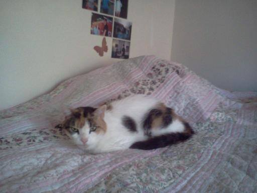

Pretty-Kitty
Calico
Pretty Kitty is the one constant cat that I grew up with, every stage of my life up until I left for college she was right There with me. Her history is long, and her personality was unknowable. Like many cats she acted as she pleased; she had a streak of distrust for men and she was definitely a reserved cat even around those she was comfortable with. Rarely, if ever, would she jump up in a lap and there were very few times she desired to go outside. She lived a peaceful and kind life, sometimes acting as a mouser, but more often than not when she made herself available she was an easy-going cat who liked to be at the edge of family activities. She was skittish around strangers and there was always a period she would display immense amounts of disdain and even hatred towards new pets. In her later years she came to trust me, I took pride in the fact she would let me pick her up and hold her and she would even come to me to sleep on the couch near me or ask me to pet her. Her love for fancy feast was a constant throughout her life, and some of the only times she would vocalize was when she was demanding fancy feast.